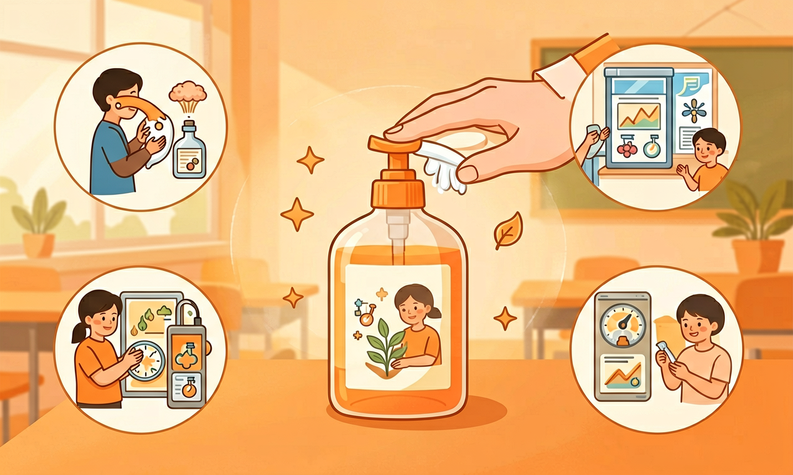
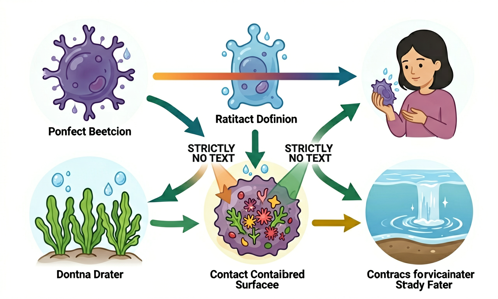
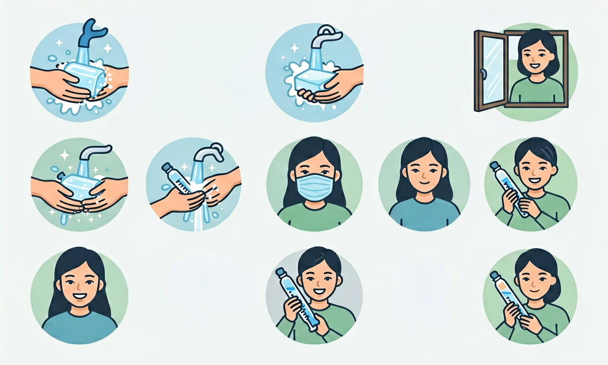

勤洗手、常通风、接种疫苗……科学卫生习惯是抵御传染病的第一道防线。

选择或输入后，这节课会围绕你的问题展开。
同学打喷嚏时飞沫落在你的课本上，最可能通过哪种途径传播病菌？
先选一个，错了正好暴露你的前概念，我们一起纠正。
传染病由病原体（细菌、病毒等）引起，可在人与人之间传播。常见途径：飞沫传播（咳嗽、打喷嚏）、接触传播（摸门把手再摸口鼻）、粪口传播（污染的食物水）。
预防的关键是控制传染源、切断传播途径、保护易感人群——早发现、早隔离、勤洗手、常通风、接种疫苗。

洗手要用流动水和肥皂，搓洗至少 20 秒，覆盖指缝、指尖、手腕。饭前便后、外出回家、接触公共物品后都应洗手。
教室要开窗通风，流行季节少去人群密集处，咳嗽打喷嚏用纸巾或肘部遮挡。按计划接种疫苗可刺激身体产生免疫力。

把步骤卡片按科学洗手顺序拖到 1→4 位置。
排完 4 步后自动判分。
解释题：流感季节，请为班级设计三条可执行的预防传染病措施，并说明每条针对哪条传播途径。
提示：通风针对空气飞沫；洗手针对接触；生病居家针对传染源。
拓展题：为什么接种疫苗后仍要注意个人卫生？
下列哪项最能同时切断多种传播途径？
选一个并查看反馈。
迁移任务：观察家里洗手台，画一张「何时必须洗手」提示卡贴在镜子旁。